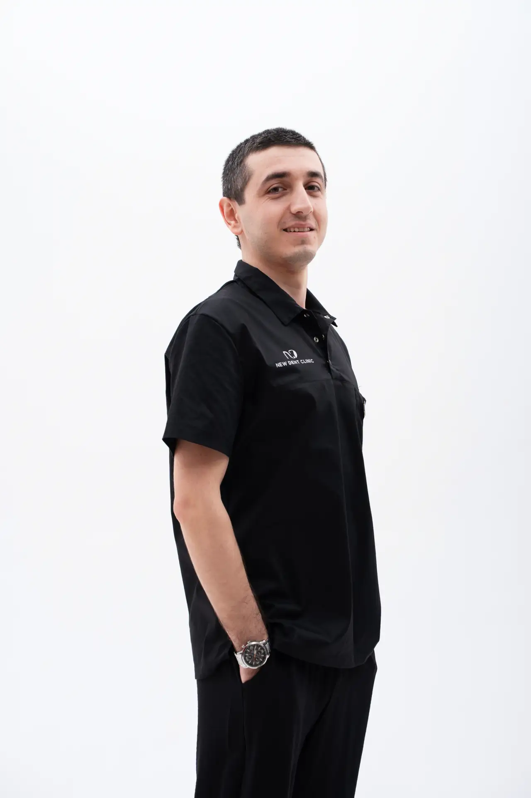
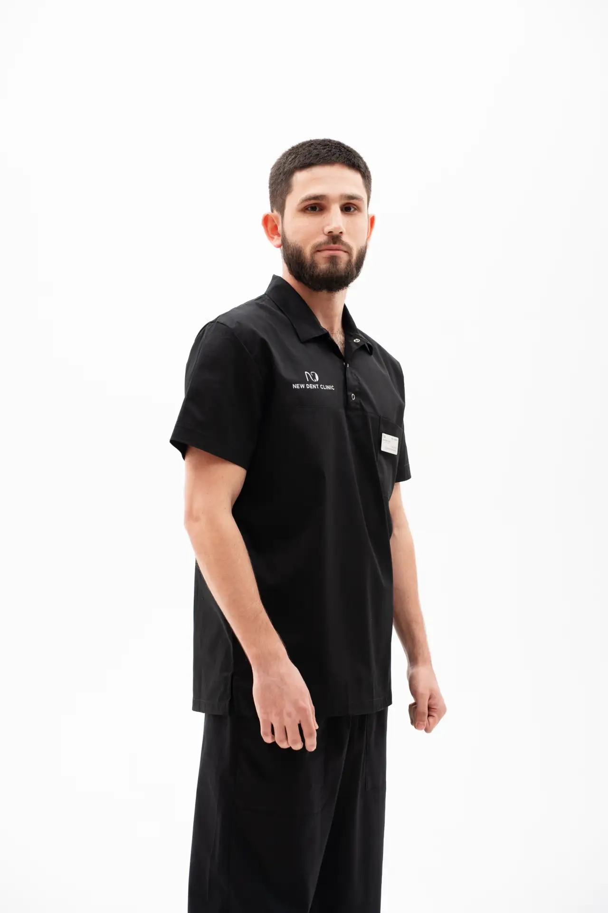
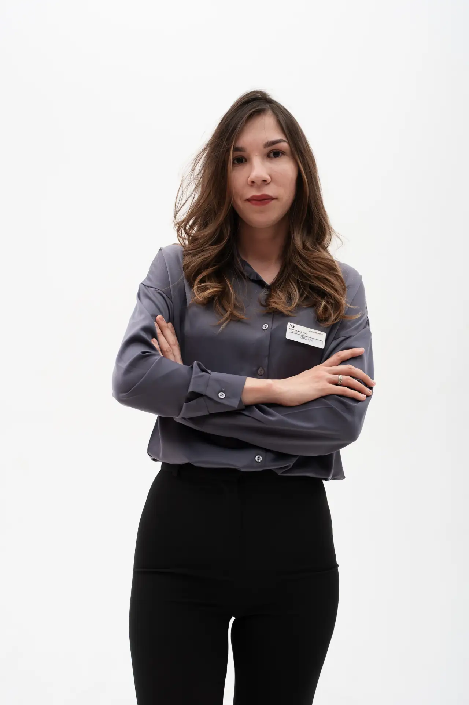

ЛЁГКОСТЬ И СВЕЖЕСТЬ
Профессиональная
гигиена
Ультразвук, Air Flow и полировка — комплексный уход за чистотой зубов.

От первого осмотра до уверенной улыбки.
Лечение, восстановление и эстетика зубов
в одной клинике.
Начните с того, что важно именно вам.
Подходящее решение подберём на консультации.
Ультразвук, Air Flow и полировка — комплексный уход за чистотой зубов.
Восстановление утраченных зубов с планированием по данным диагностики.

Исправление прикуса у взрослых и детей. Решение под ваш образ жизни.
Основные процедуры — перед вами.
Подробный прайс открывается в каждом разделе.
Понятный план.
Взвешенное решение.
Консультации, лечение кариеса и гигиена.
Первичный приём
Поверхностный кариес
За две челюсти
Хирургические процедуры и восстановление зубов.
Удаление зуба
Цена зависит от сложности
Операция установки · без коронки
Коронки, виниры и протезирование.
Винир
Безметалловая коронка
Циркониевая коронка
Коррекция прикуса и ретенционные аппараты.
Нижняя челюсть · не полный курс
Нижняя челюсть · не полный курс
Ретенционная / от бруксизма
У каждого пациента своя история. Поэтому лечение начинается с разговора: что вас беспокоит, какого результата вы ждёте и что для вас особенно важно.
В NEW DENT диагностика, лечение и восстановление объединены в последовательный план. Вы понимаете, какие этапы предстоят и зачем нужен каждый из них.
Знакомство с врачом — первый шаг к спокойному лечению. Подберём специалиста под вашу задачу.
Индивидуальный подход, понятный план и внимание к каждому этапу лечения — основа работы команды NEW DENT.
Записаться на консультациюЗдоровье.
Функция.
Эстетика.
Листайте карточки



Уточнить расписание и специализацию врача можно у администратора.
ФОРМА И ФУНКЦИЯ В ГАРМОНИИЦель лечения — не только внешний вид. Это возможность комфортно есть, говорить и улыбаться без стеснения.
Перед первым визитом познакомьтесь с опытом пациентов на независимых площадках.
Позвоните по номеру +7 (927) 555-07-75. Администратор поможет выбрать направление, врача и удобное время. Приём ведётся по предварительной записи.
Возьмите паспорт, имеющиеся снимки и заключения по предыдущему лечению. Расскажите врачу о принимаемых лекарствах и известных аллергиях.
Цены на отдельные услуги собраны в разделе «Услуги и цены». Полный план и итоговая стоимость лечения определяются после осмотра. Уточнить детали можно у администратора.
Подходящий метод подбирает ортодонт после диагностики. На консультации можно обсудить особенности каждого варианта, сроки и уход.
Да, доступны наличные, банковские карты и СБП. Детали оплаты уточните у администратора перед визитом.
Первый шаг к вашей новой улыбке.
Выберите направление и удобное время —
всё остальное начинается со знакомства.
Познакомьтесь с будущей формой записи.
Данные никуда не отправляются.
Дата и время показаны для примера. Реальную запись пока можно оформить по телефону.
Астрахань, ул. Украинская, 3к/2
2-й этаж
Ежедневно, 09:00–20:00
По предварительной записи